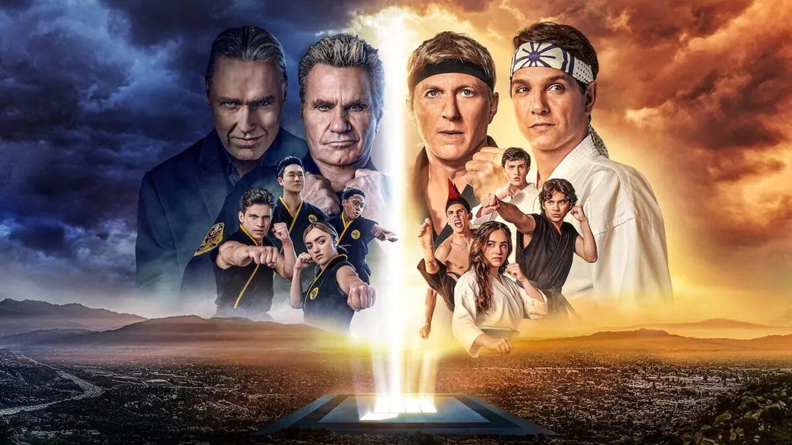

Cobra Kai, una rivalidad interminable


"Cobra Kai" es una serie de televisión que sirve como secuela de la icónica película de los años 80 "The Karate Kid". La trama se centra en la rivalidad continua entre Daniel LaRusso (interpretado por Ralph Macchio) y Johnny Lawrence (interpretado por William Zabka), quienes ahora son adultos. Johnny reabre el dojo Cobra Kai, lo que reaviva la enemistad entre él y Daniel. La serie explora temas de redención, segundas oportunidades y el legado de la enseñanza del karate. A medida que las nuevas generaciones se involucran en la rivalidad, los personajes enfrentan desafíos personales y morales mientras luchan por mantener el equilibrio entre el bien y el mal en el mundo del karate. "Cobra Kai" combina nostalgia con una trama contemporánea y es una serie emocionante llena de acción y giros inesperados.